Albania AI 2035 — Original PDF Visuals
These are direct page renderings of the supplied PDF, preserving the diagrams, dashboard, typography, tables, graphics, and page composition as displayed in the original document.
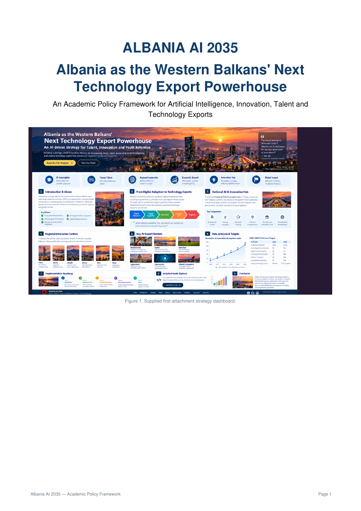
Original PDF page 1 of 14 — click to enlarge.
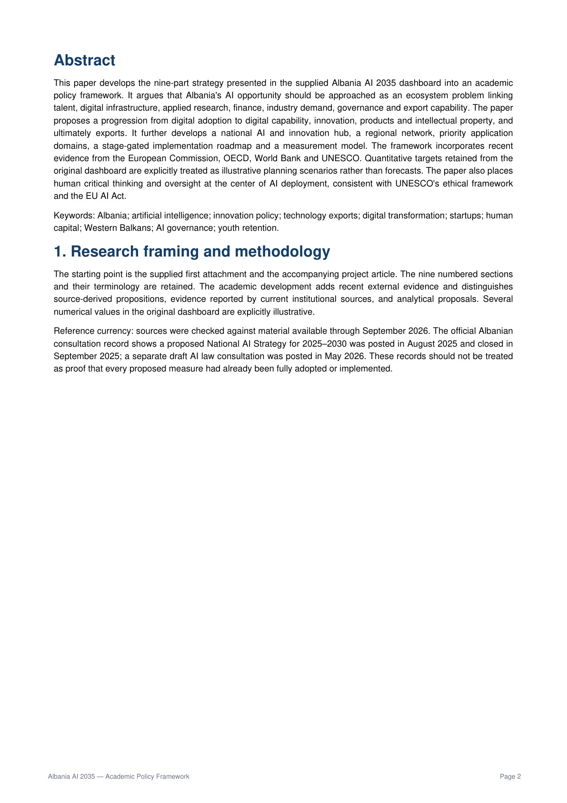
Original PDF page 2 of 14 — click to enlarge.
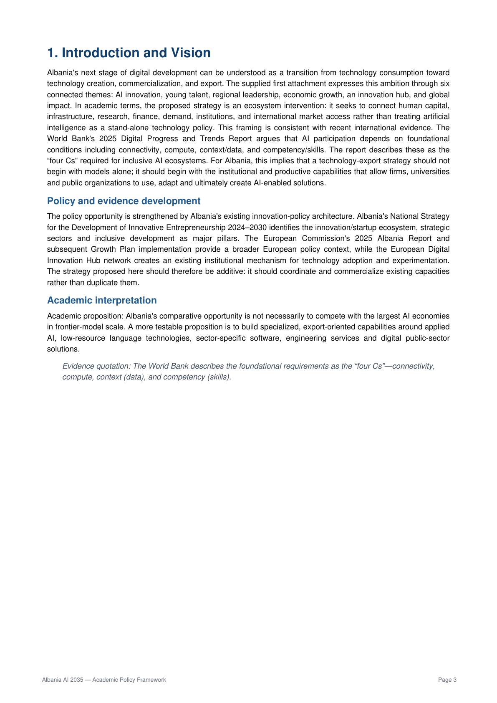
Original PDF page 3 of 14 — click to enlarge.
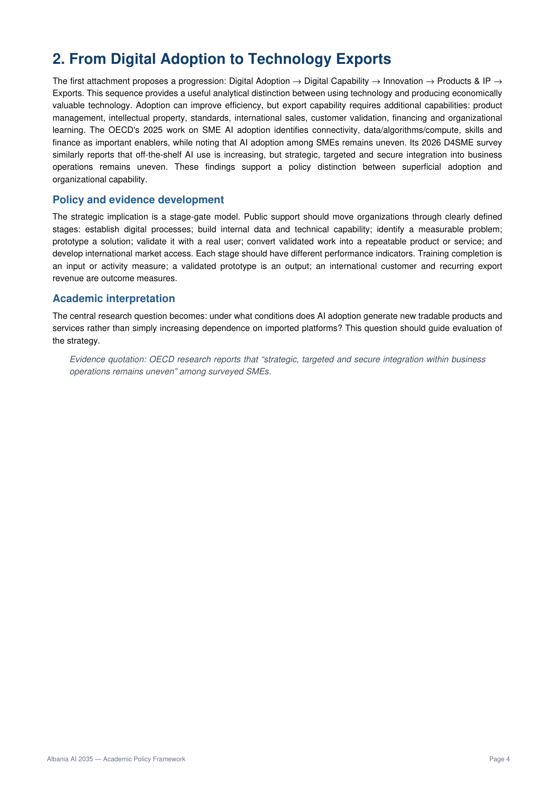
Original PDF page 4 of 14 — click to enlarge.
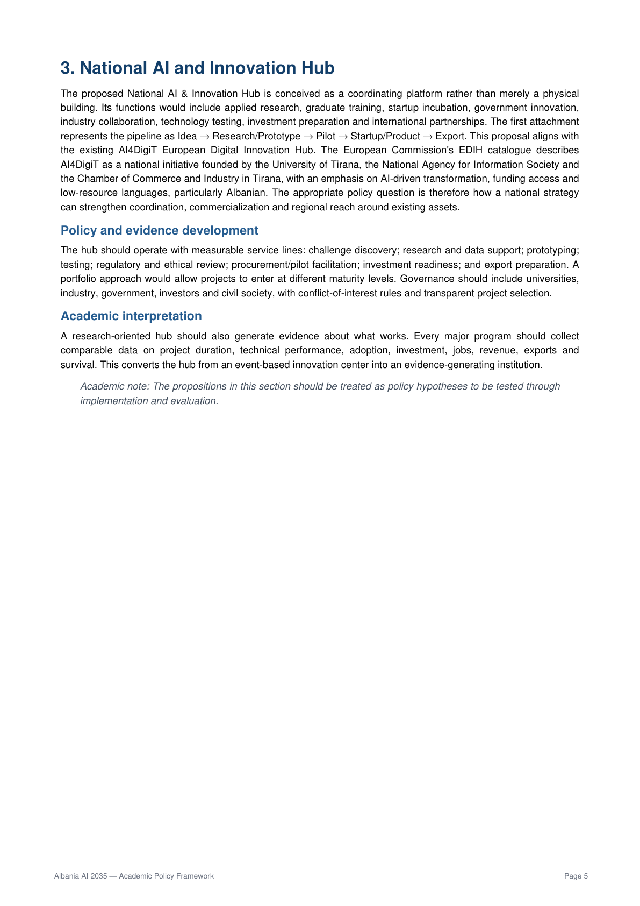
Original PDF page 5 of 14 — click to enlarge.
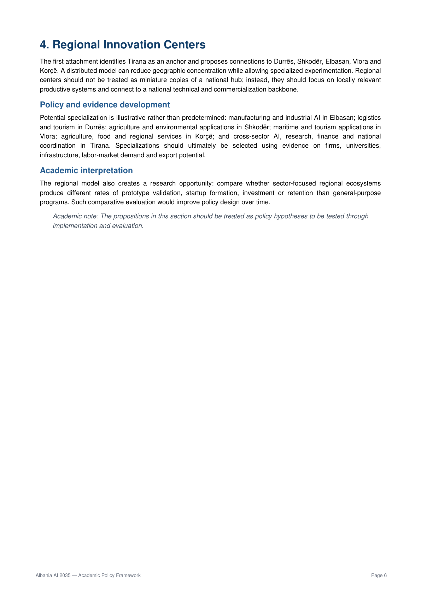
Original PDF page 6 of 14 — click to enlarge.
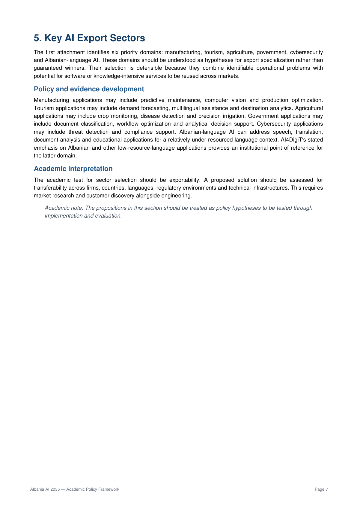
Original PDF page 7 of 14 — click to enlarge.
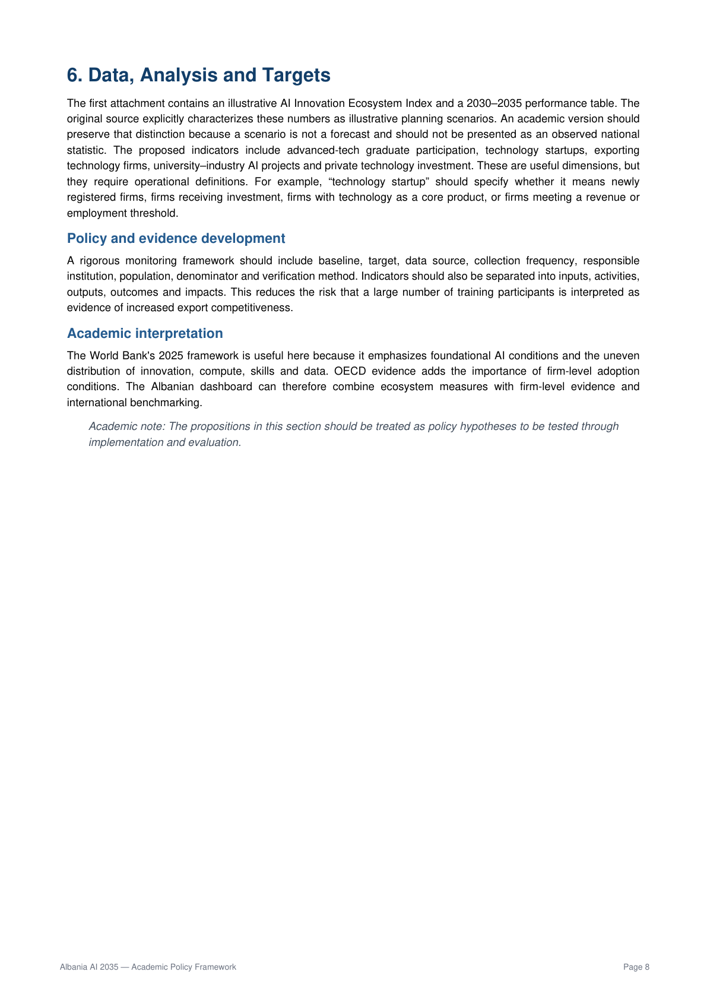
Original PDF page 8 of 14 — click to enlarge.
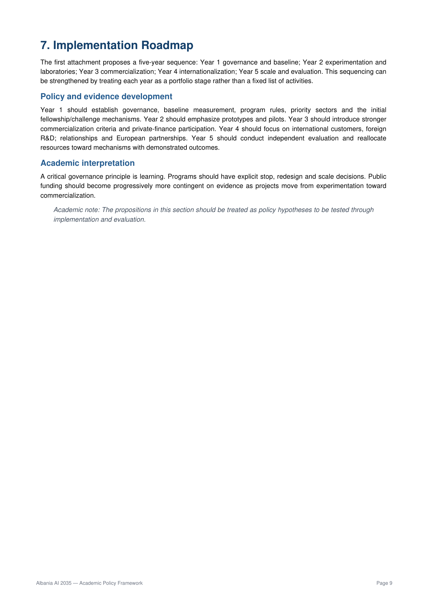
Original PDF page 9 of 14 — click to enlarge.
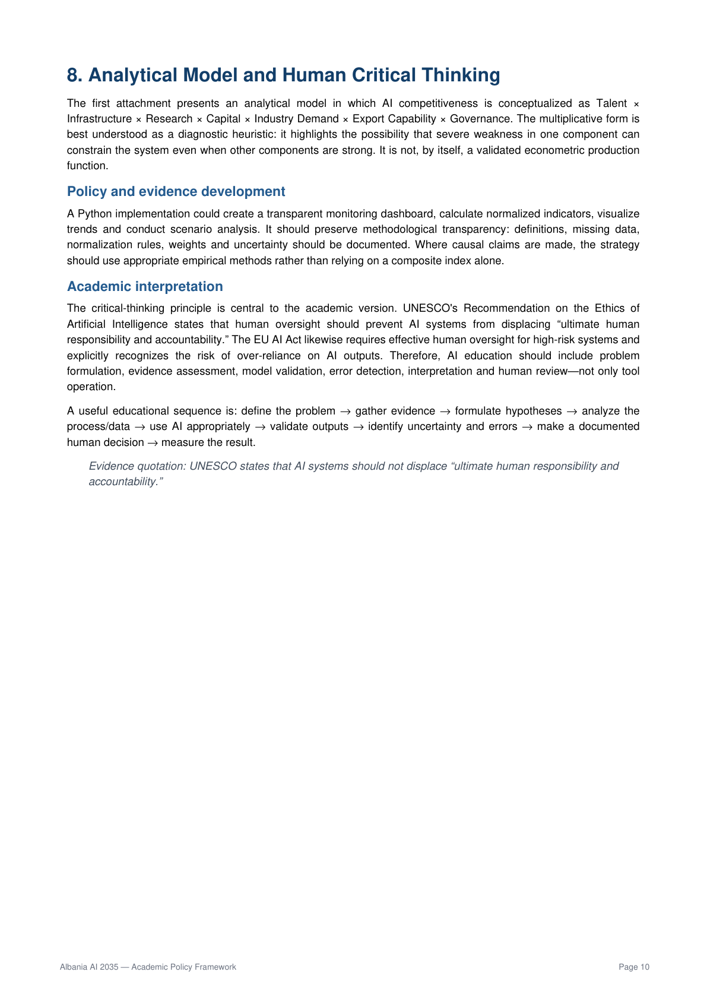
Original PDF page 10 of 14 — click to enlarge.
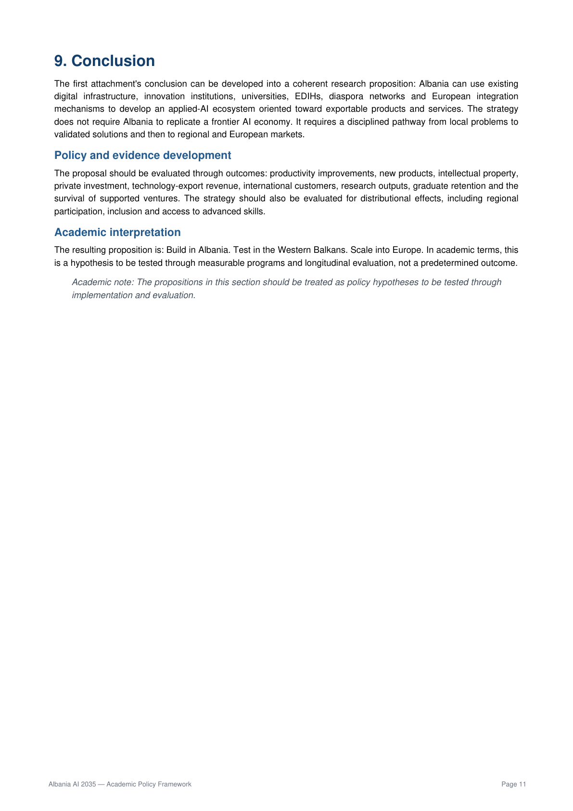
Original PDF page 11 of 14 — click to enlarge.
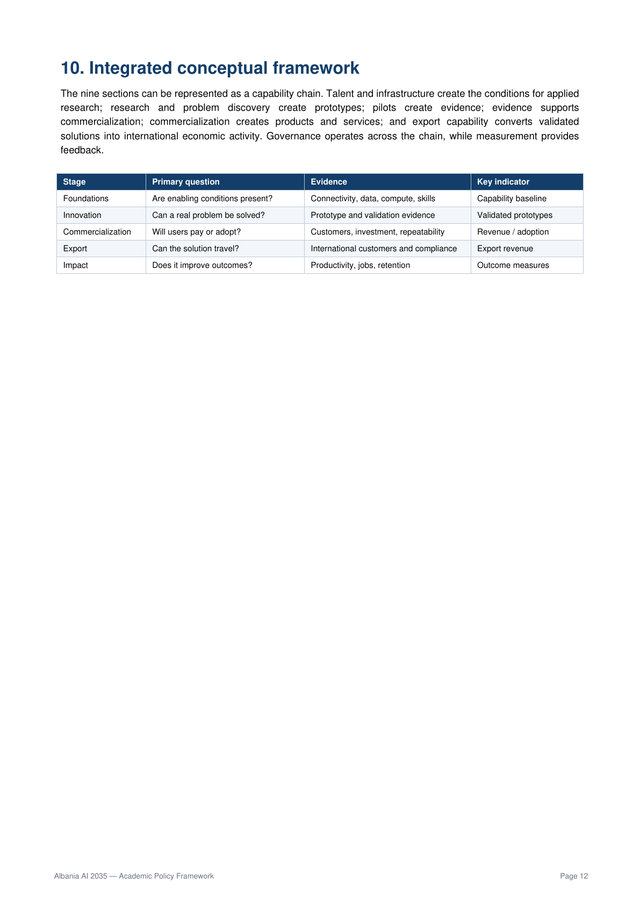
Original PDF page 12 of 14 — click to enlarge.
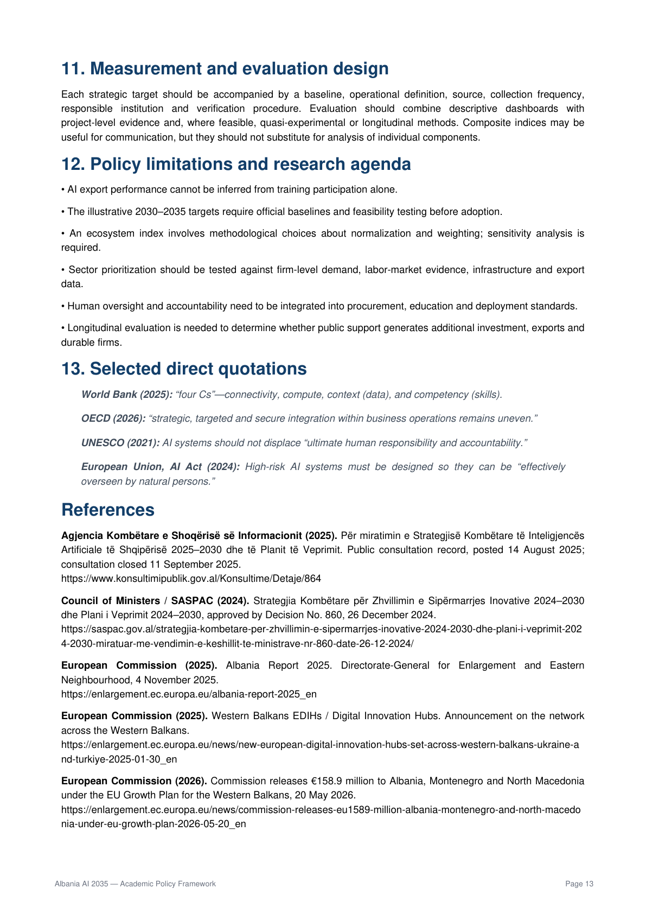
Original PDF page 13 of 14 — click to enlarge.
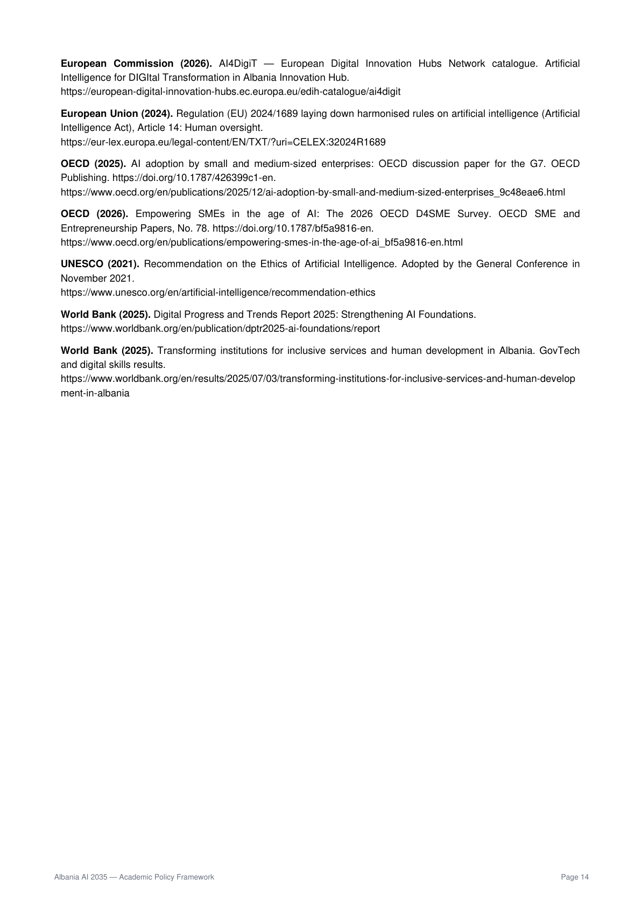
Original PDF page 14 of 14 — click to enlarge.